Guilds
There are several communities in the Empire, known as Guilds.
The guilds' purpose is to diversify gaming process of the characters
and to enhance the efficiency of their actions.
Hunters'
Guild
Laborers'
Guild
Mercenaries'
Guild
Thieves'
Guild
Rangers'
Guild
Commanders'
Guild
Gamblers'
Guild
Smiths'
guild
Enchanters'
Guild
Watchers'
guild
Adventurers'
Guild (Battle Campaigns)
Leaders’ Guild
Hunters' Guild
Hunters’ guild is a foundation that protects the Empire's lands from
neutral creatures' attacks. According to the scouting reports, they can
be spotted all over the global continent map. Besides improving your
combat characteristics, facing neutral creatures can also grant you
additional income as captured gold and artifacts. Challenging neutrals
is possible once in 40 min. Passing by the neutrals or moving to
another location while having neutrals on track brings up another ones
in half that interval. Also, hunting during the nighttime period of
00:00~08:00 server time allows hunting twice more often.
A lord can ask for assistance in hunting after getting level 2 in the
guild. The assistant must be present in the same region, and be either
of the same combat level, one or two levels lower than the main hunter.
In case of victory, the assistant gets half the gold and resources,
gains 0.1 hunt points, up to 0.5 faction skill points, full experience
and has a chance to find an artifact. The combat initiator will get the
amount of hunt points proportional to damage dealt during the hunt, and
the other half of the gold and resources.
Hunting gives two times less faction points and 5 times less combat
experience if compared to PVP combats. After getting enough hunt points
to get a new guild level, the guild will teach you more complicated
combat tactics increasing your attack skill by 1. Details
With the hunt points amount increased, numbers of neutral creatures on
the map grows, too, as well as treasures, guarded by them, and artifact
value. For example, after getting level 3 in hunters’ guild you will be
able to find some resources in addition to gold.
The probability of getting an artifact is determined by the lord's
hunter level. The higher the guild level is, the more probable it is to
find an artifact. Thereupon, new hunters' guild levels ensure finding
better items. Artifacts found have unique properties and can be kept to
gather ammunition sets.
Attacking neutral creatures is only
possible anytime the regular combat is possible:
1) Your troops must be 100% ready;
2) Your character must not be in a combat challenge;
3) The "Defense" parameter of your character mustn't be negative;
4) Your character must have a minimal amount of troops recruited in the
army.
Hunters should take to consideration, that three quarters of mana used
in hunt will be immediately restored after finishing it.
The guild has its own top rating list.
Laborers' Guild
When sending his or her workers to production works, your character
gets special skill points that make count of the laborers' guild. The
efficiency of any industrial facility depends for that reason directly
on the professionalism of its workers, while their wage is multiplied
by a certain coefficient. The laborer skill is displayed at the
character information page, and the guild point table can be found in
the corresponding
section of this help section.
Anytime a character dispatches his or her workers to facilities 10 time
in a row since the last victorious combat, workaholic penalty is
enabled. Every next workshift leads to 20% efficiency drop down to 10%
efficiency. Efficiency is restored in full only if the character gets
at least 0.5 faction skill points in a victorious combat. Otherwise,
the counter of workshifts is diminished only in proportion to received
faction skill points.
Besides increasing wage, the laborers' guild will also increase the
defense skill of your character. Every even Guild level increases his
or her defense by 1.
Mercenaries'
Guild
Offices of this guild can be found in Peaceful Camp, Fairy Trees, East
River and Fishing village. The guild's main objective is to aid the
regular army in constraining the constant threat of aggressive
neutrals. Daredevils and adventure seekers are also always welcomed.
Their main business is to complete various quests. A quest can be taken
by any character, however, the chances for success of characters with
combat level lower than 5 aren't too high. All the quests are limited
in time. Every mercenary considers it a duty to return to the guild and
report his or her quest successes. That is when the quest is considered
completed or failed. For completing the quest, the guild rewards your
character with gold and sometimes rare elements. Lords who completed
lots of guild quests get additional bonuses from the guild. New
possible reward types are uncovered with new Guild levels achieved:
| MG 0 |
MG 1 |
MG 2 |
MG 3 |
MG 5 |
|
|
|
|
|
|
|
|
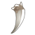 |
|
|
Every mercenary has a certain reputation in the guild, it affects the
frequency of quest offers. Successful quests increase the guilds
loyalty, while rejecting the quests or failing them decreases your
reputation. Note that it is much harder to gain the guild's trust, than
to lose it.
The amount of guild points necessary for leveling up can be learned
from the experience
tables.
Thieves' Guild
This is a clandestine guild, your
character does not have free access to it since registration.
A secret society, whose primary objective is to ambush trade caravans.
Entering the guild is only possible if you possess a special invitation
acquired from another thief, or after paying the guild
entrance fee:
Combat level 6 is required to enter the guild. The
invitation parchment disappears from the inventory; however, a
progressive thief gets new ones after reaching level 5 of the guild.
Players who had previously received the
TGI at Guild level 2 by the old rules, will not be given one at Guild
level 5.
Lords gain guild points for successful ambushes. Besides that,
defeating other players and mob caravans earns gold. The loot is
proportional to the thief skill level.
Equally with caravans, it is possible to encounter player characters of
the same combat level. The ambushes are set between regions in both
directions. Ambush can only occur if someone walks between those
regions. However, the traveler always has a chance to pass unspotted.
If two travelers are walking in the same direction and both get caught,
all the three will fight in one combat. Obviously, the victims would
unite against their aggressor.
1) The troops of the ambusher must be 100%
ready and those of the traveler - at least 40% ready for the ambush to
take place;
2) The thief's victim who suffered a defeat cannot be ambushed again
unless three hours have passed since last ambush;
3) The thief who lost the combat can set a new ambush only 1 hour later;
4) During ambush, the troops and mana restoration of the victim does
not cease, the necromancers' skeleton reserve does not diminish and
won't be reset after combat.
5) Any thief who had abandoned the Guild may return by paying a penalty
of 1000*[combat level] gold.
6) Characters may have the initiative bonus only from the guild that is
currently active.
Each new level in thieves’ guild grants
its member initiative increase,
as well as one random Thief
set artifact until guild level 7, or one random Plunderer
set artifact since guild level 8.
Note that the initiative bonus is only applicable whilst you are an
active guild member, it never stacks with initiative earned with the
Rangers’ guild.
Rangers' Guild
An honorary organization founded to combat the atrocities of the
Thieves' Guild on the Empire’s travel and trade routes. The main
objective of the guild is to promptly identify where thieves lie in
ambush and quickly eliminate the detected threats, so that over time,
robbery and burglary is eliminated in the lands of the Empire once and
for all.
Joining the ranks of the brave Rangers is possible for any lord or lady
who has reached combat level 7 and entrance is absolutely
free. To join, one will need to visit the guild
headquarters at Empire Capital and pass the test of a
military ranger-teacher, in which he teaches the applicant the
rudiments of Ranger skills. The guild door is open even for repentant
thieves, but to prove their loyalty, former thieves will have to
renounce all Thieves' guild privileges, including freezing the extra
initiative they earned during their days of crime.
Ranger guild points are gained with the successful performance of
missions. Missions are accepted at briefings at the guild headquarters.
The briefings take form of an urgent call to help Ranger Scouts in
battle against a thief who has been spotted to lie in ambush in certain
location of the map. In order to successfully complete the mission, the
lord or lady would have to reach that location in very short time and
to defeat the thief. However, in order to accept the job, he or she
needs to have high-speed mount (Stallion or better), as thieves are
very nimble and known to quickly escape from persecution. The Ranger
scout participates in combat at the Ranger's side, acting
independently, but can also carry out certain instructions from the
lord or lady in obedience to the following commands:
wait (the assistant
will wait with his troops);
x:y (the coordinates
of an enemy stack that is to become the focus of the assistant's
attack, where x is horizontal and y - vertical coordinate of the tile.
example, 11:1);
attack (independent
attack mode, applicable if either of the first two commands were used
afore).
There is also a chance to fall into an ambush of a thief player whose
combat level is the same as the Ranger's. Guild points may also be
gained by successfully defeating a thief in the ambush, but for that,
one must have joined the guild (passed the entrance test) and it should
be selected active (not the Thieves' guild).
1) To start a guild mission battle, the
Ranger must have his or her troops 100% ready;
2) To be caught in a thief ambush whilst moving between locations, the
Ranger must have his or her troops at least 40% ready;
3) The thief who has been defeated by the Ranger suffers a 1 hour
penalty before being able to ambush again.
4) Any ranger who had abandoned the Guild may return by paying a
penalty of 1000*[combat level] gold.
5) Characters may have the initiative bonus only from the guild that is
currently active.
Each new level in rangers’ guild grants its member initiative increase;
certain
levels will also earn a random Ranger
set artifact.
Note that the initiative bonus is only applicable whilst you are an
active guild member, it never stacks with initiative earned with the
Thieves’ guild.
Commanders' Guild
Commanders' Guild is for those who prefer PvP (player versus player)
combat. To participate, click Battles in the main menu and select the Commanders' Guild
item in the dropdown.
Unlike regular group battles and duels, combat in this guild follows
stricter rules. First, you must reach combat level 9 or higher to be
eligible to join the guild. You’ll also need to pass a trial, in which
you must defeat a mirror image of your own army and character, only 20%
larger.
Possible combat types include:
1. Duels (1x1) between players of the same combat level.
2. Paired (2x2) battles between players of different combat levels.
3. Mixed (up to 3x3) group battles.
Guild battles start once every 30 minutes; challenges are accepted
between 20 and 30 minutes and between 50 and 00 minutes on the hour.
When fighting Duels, you will not be matched against the same opponent
more than twice a day. If no suitable duel opponent is found for you 1
minute before battles start, you may switch to mixed group battles
instead.
When matching challengers with each other, priority is given to paired
2x2 battles between same or almost same combat levels. For example, two
players of CL 15 and 14 CL will be matched up against two other players
of CL 15 and 14 if possible, and so on. Only after all such matchups
are exhausted do challenges enter the Mixed draw. If you select a
specific partner before battles start, you will be automatically
entered into the Mixed draw. Not all challengers are guaranteed to get
a match every time.
The winning team receives from 1 to 1.5 guild points, depending on the
combat type and the number of players, and a chance to get a creature
armament. The losing team receives from 0.2 to 0.3 guild points.
Commanders' Guild battles offer a far better ratio
of faction skill points to experience than do regular group battles. In
addition, each new guild level grants you one special artifact out of
the 13 that make up the Commander’s
set. Also, after reaching guild level 1, you get a chance to
loot one of the defeated player' artifacts (the looted item is a
low-durability, non-transferable replica of the one worn by the
defeated player) in PvP battles. The chance of this increases with each
new guild level you attain.
Gamblers' Guild
The guild unites all admirers of the "Two Towers"
card game. Any player can have a game at the tavern of the region he or
she is currently in. Victory grants one guild point, losers go
empty-handed. After receiving the first level in the guild, as well as
3d combat level, the players gain a possibility to bet on their
victories. The amount of victories necessary for passing to a new level
and the maximal stake amount for your current level can be learned from
the experience
table.
Taverns in different regions have different starting and victory
conditions, as seen in the following table.
| Data |
Initial
conditions |
Victory conditions |
| Region |
Tower |
Wall |
Mine |
Monastery |
Barracks |
Tower |
Resources |
Empire
Capital
Eagle Nest
Port City |
20 |
5 |
2 |
2 |
2 |
50 |
150 |
East
River
Portal Ruins
Mithril Coast
The Wilderness |
20 |
10 |
3 |
3 |
3 |
75 |
200 |
Tiger
Lake
Dragons' Caves
Titans' Valley |
20 |
10 |
5 |
5 |
5 |
150 |
400 |
Rogues'
Wood
Shining Spring
Great Wall |
20 |
50 |
1 |
1 |
5 |
100 |
300 |
Wolf
Dale
Sunny City
Fishing Village |
50 |
50 |
5 |
3 |
5 |
100 |
300 |
Peaceful
Camp
Magma Mines
Kingdom Castle |
20 |
10 |
3 |
1 |
2 |
125 |
350 |
Lizard
Lowland
Bear Mountain
Ungovernable Steppe |
20 |
10 |
1 |
1 |
1 |
200 |
500 |
Green
Wood
Fairy Trees
Crystal Garden |
30 |
15 |
4 |
4 |
4 |
100 |
300 |
There are strict rules in the guild:
1) The Tavern owner gets 5% interest from each trophy sum;
2) A player with lower guild level cannot join a game with a bet for
higher level;
3) It is not necessary to be in the same region the challenger is to
accept his or her challenge.
Insults and foul language at the game table are forbidden. Moderators
watch the taverns and keep order, giving penalties to tempestuous
visitors.
Smiths' guild
To enter this guild, you should get to combat level 6 and build a
Blacksmith in your castle. Enter it and open the "repair" section and
you will be able to repair worn out artifacts.
Any artifact with durability 0/X
can be repaired. Repairing efficiency depends on the guild level and
varies from 10% to 90%. For instance, the guild novice will repair
artifacts with 10% efficiency, which means, that a worn out artifact of
0/30 will have 3/29 durability after repairing, while an experienced
blacksmith with 60% efficiency would turn the same item to 18/29
durability.
 Repair cost with any
efficiency makes 95% of the converted shop artifact cost (according to
the prices of the shop),
and
is even higher for rare set artifacts, while the best available repair
efficiency is 90% at most. The guild warns that smithing is an art, and
usually leads to spending a lot of gold to build up an effective smith.
Rare or enchanted artifacts cannot be bought at the shop, repairing
them is the main function of a smith. Repair cost with any
efficiency makes 95% of the converted shop artifact cost (according to
the prices of the shop),
and
is even higher for rare set artifacts, while the best available repair
efficiency is 90% at most. The guild warns that smithing is an art, and
usually leads to spending a lot of gold to build up an effective smith.
Rare or enchanted artifacts cannot be bought at the shop, repairing
them is the main function of a smith.
Smiths who have achieved guild level 8 and belong to a Military clan
that has built a depository may gain access to repairing clan artifacts
deposited for repairing at the cost of depository account gold. The
artifact must not be deposited in a set to be able to repair it. The
clan leader may set an automatic reward for guild smiths ranging from 1
to 10% repair cost.
1) Repair time and cost do not change with
the smiths' guild leveling. The only thing that increases is the
efficiency, hence the artifact's resultant durability;
2) Repair time and guild points gained only depend on the estimated
value of the artifact and are in direct proportion to it. Thus, the
more expensive the item is, the longer time it will take to repair it
and the more guild points it will grant;
3) Repairing two artifacts at a time is not possible, moreover, you
need to reach guild level 9 to be able to do two types of works in your
blacksmith (repairing and enchanting) at the same time.
The amount of guild points necessary for "smithing up" can be learned
from the experience
tables.
Enchanters' Guild
Founded by the Great Craftsman's apprentices, the guild allows the
characters to create their own personal ammunition parts. Almost any
known artifact can be modified, gaining new magical properties after
enchanting. Modifying takes place in your blacksmith that cannot be
built before combat level 6. Rare elements, received in the
Mercenaries’ guild or bought at the market, are used in the enchanting
process.
There are three subdivisions of the guild called branches. Every guild
member can be a weaponsmith, armorer and/or jewelcrafter. The power of
lord's modifying depends on the corresponding branch level. Any
improvement requires time and elements.
The guild points gained from a modification equal to the amount of
spent elements. These points are added to both the subdivision level
and the common guild level counts. Every apprentice must decide,
whether to be a skilled enchanter in one branch or to be able to
enchant a little bit of everything.
|
|
|
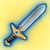
|
|
|
|
Enchantment
type
|
Code
|
Elements
|
Enchantment
type
|
Code
|
Elements
|
Enchantment
type
|
Code
|
Elements
|
|
Earth
elemental damage bonus
|
E
|
|
Earth
elemental shield
|
E
|
|
Earth spell
damage bonus;
ignore air shield
|
E
|
|
|
Air
elemental damage bonus
|
A
|
|
Air
elemental shield
|
A
|
|
Air spell
damage bonus;
ignore earth shield
|
A
|
|
|
Fire
elemental damage bonus
|
F
|
|
Fire
elemental shield
|
F
|
|
Fire spell
damage bonus;
ignore water shield
|
F
|
|
|
Water
elemental damage bonus
|
W
|
|
Water
elemental shield
|
W
|
|
Water spell
damage bonus;
ignore fire shield
|
W
|
|
|
Ignore
target`s defense
|
I
|
|
Decrease
attack of attacking stack
|
D
|
|
Nature spell
efficiency bonus
|
N
|
|
|
Ability to
set the 5th enchantment
|
-
|
|
Ability to
set the 5th enchantment
|
-
|
|
Ability to
set the 5th enchantment
|
-
|
|
Up to 5 different modification
types can be set on every artifact. This amount depends on the
enchanter's guild level. To enable the setting of 5th enchantment on
any item, 10 Fern flower elements must be used. For advertising
purpose, the enchanter can mark an artifact he worked at with his or
her personal brand (for extra 5000 gold).
After modifying an artifact, a special marking is added to its name and
the image of the artifact displays related symbols.
In combat you can see the effect from modified artifacts by Ctrl+double
clicking the character image.
Building the blacksmith is required to
enter the guild. It can be built by characters who reached combat level
6.
Upon reaching guild level 5, it becomes possible to use both sections
of the blacksmith at the same time, allowing you to repair items even
when enchanting is in progress.
The amount of guild points necessary for climbing the guild level
stairs can be seen in the experience
tables.
Watchers' guild
Ancient tales of a secretive guild of watchmen that would defend the
Empire lands from its numerous enemies long before every other guild
appeared were passed from generation to generation, from dynasty to
dynasty. The watchmen would defend the Empire with a shield unseen,
fighting the invaders, punishing the villains, guarding ancient relics
and protecting magical leylines. At times, woeful events would disturb
the relevant calm in the Empire, forcing the nobility to take arms to
defend their land as it would seem that the saving hand of the guild
had vanished. But over time things would resume their normal course.
Many Heroes of the Empire, as well as Lords and Ladies later on, sought
to discover the guild's location and the watchmen themselves, but the
latter waited for the fateful hour. They knew that eventually times of
great disturbance would come and the Empire would appear under too much
tension. And that then, only the most prominent of the heroes and lords
would have to be accepted among the ranks of the veteran Watchmen.
1. Any Lord or Lady of combat level 3 and above may join the new guild;
2. In order to join the guild, you will need to run a test errand
offered by the guildmaster;
3. Watchers' Guild may be accessed via the link,
as well as in the top right corner of the map.
|
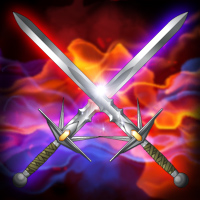 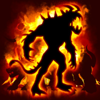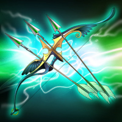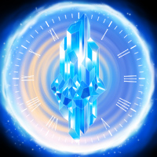
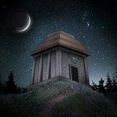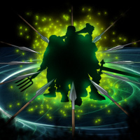
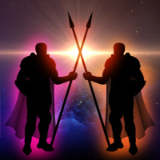
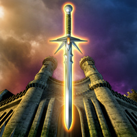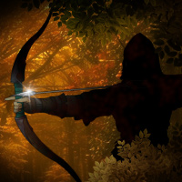
|
1. Three Watchers' Guild errands are available each day. Errands are
changed at midnight;
2. The first successful completion of an errand is awarded with gold
scaling by your combat level;
3. Success of your combat is ranked in stars (from 1 to 3), depending
on suffered casualties. The better an errand is completed, the more
experience, faction skill points and guild points you will receive. A 3
star errand will also earn a random creature armament;
4. An errand with its success ranked at 1 or 2 stars may be re-run to
improve your result and get the difference of experience, faction skill
points and guild points;
5. If a re-run errand is failed or the result isn't improved, the
difference of points will not be received;
6. An errand may only be re-run with the faction and class from the
initial attempt;
7. Only shop artifacts are accepted in guild errands. Artifact
enchantments have no effect;
8. For each combat level there is a set level of required and
recommended ammunition points;
9. Errand complexity increases with each new guild level;
10. All guild errands are accomplishable a posteriori (already
completed at the given combat level with the given faction and class);
11. The potion
of skill has effect in Watchers' Guild combats (at average
faction skill level at the given combat level).>
Adventurers' Guild (Battle
Campaigns)
Uniting avid adventurers and thrill seekers, this guild awards guild
points for completing Battle
Campaigns. Battle Campaigns offer intriguing adventures on
graphic minimaps in which you wage battle, collect valuable items and
interact with story characters. Unlike quest missions, campaigns
battles feature opponents whose armies and stats generally match yours
in strength, meaning that you can complete each campaign multiple times
with different factions for new and exciting experiences.
1) Each campaign comes in three possible difficulty levels:  "Recruit", "Combatant" è "Hero". The Hero level unlocks
after you successfully complete a campaign on the Combatant level. "Recruit", "Combatant" è "Hero". The Hero level unlocks
after you successfully complete a campaign on the Combatant level.
2) For the first time you successfully complete a campaign on each
difficulty level (using a particular faction and class), you will
receive a valuable reward depending on the chosen difficulty. Rewards
may include diamonds, estate certificates (100 are needed to claim an
estate), gold, resources, artifacts and/or creature armaments.
3) You can fight campaign battles wearing any artifacts, but
enchantments and tavern drinks have NO effect.
4) Experience points and faction skill points for campaign battles won
are awarded only for the first time you play a campaign on a given
combat level, with a given faction and class, on each difficulty level.
If you happen to lose the same campaign battle several times, you will
only receive (partial) experience and skill points for the first loss.
5) When you replay a campaign with a different faction or class, you
will face different enemies. All battles are known to be winnable.
6) Similar to the Watchers' Guild, your performance in campaign battles
is evaluated based on how much of your army survives. The highest
possible result may be attained only by winning all of the available
battles in a campaign.
7) If you attempt and lose the same battle three times or more, the
enemy’s army will be weakened, but an eventual victory will only earn
you the minimum score.
8) The guild maintains rankings per combat level, taking into account
all of a player’s campaign completions, including all the factions and
classes used.
9) Potion of Skill is effective when fighting campaign battles, based
on the average faction skill level of players at your combat level.
Your guild points are the sum of your best scores
for each campaign completion with each faction and class, out
of all difficulty levels. This means that when you complete a
campaign a second (or third, etc.) time with the same faction and
class, you can earn additional guild points only if
you improve your score, which is calculated per the formula below:
- 0.8 * Efficiency
rate for Recruit level
- 1 * Efficiency
rate for Combatant level
- 1.2 * Efficiency
rate for Hero level
Example:
You complete Finding the Healer as a 15
CL Elf on medium (Combatant) difficulty.Your efficiency rate is 90%.
For this you earn 100 * 0.9 = 90 Adventurers’ Guild points. Next, you
complete the same Campaign as a Charmer Elf on high (Hero) difficulty.
Your efficiency rate is 100%. For this you earn an additional 120 * 1.2
= 120 guild points. Then you level up to CL 16. You may complete the
same Campaign as Charmer Elf again, and you would earn experience
points, skill points and other rewards, but you would NOT earn any more
Adventurers’ Guild points no matter what score you get. However, if you
complete the Campaign as a regular Elf and get a higher score than you
did originally on CL 15, you can earn additional guild points: up to 10
extra points if you choose Combatant difficulty (100 - 90), or up to 30
extra points (120 - 90) if you choose Hero difficulty.
Leaders’ Guild
The grand walls of the Leaders’ Guild offer all Lords and Ladies of
combat level 5 or higher the opportunity to prove their full leadership
potential, both for their own benefit and that of the Empire, and lead
their followers to everlasting glory.
In order to perform Guild tasks, the Heroes need to gather their army.
Once every five battles for which
the acquired skill points are not less than 0.3 and artifacts
deteriorate, a random stack of creatures will join you.
The total leadership value of the
creatures that join you depends on whether the battles were won and how
much AP was worn.
Guild features:
1. Each Lord or Lady can form an army from
the detachments of followers available to them and send them to
complete special challenges.
2. The number of creatures recruited depends on your leadership
capacity and the leadership value of the creatures. Your leadership
capacity is determined by your level in the Leaders’ Guild.
3. The total leadership value of one recruited creature type cannot
exceed 40% of your leadership capacity.
4. A maximum of three challenges, or four challenges with the
Abu-Bakir’s Charm, are available to you at a time. Challenges are
replenished at the rate of one every three hours until they reach the
maximum number.
5. In any challenge there are three levels of difficulty; the more
difficult the opponent, the more gold and Guild points you can earn.
6. Having lost a challenge at one of the levels of difficulty, you may
still try to win the challenge on a different difficulty.
7. Upon completion of a challenge, a new one, if available, will be
presented. A challenge is considered completed if you win it at any
difficulty level, lose it at all levels of difficulty, or skip it.
8. Fights take place without artifacts, skills, or participation of
your character. After placing the units, if you wish, you can activate
automatic combat.
9. You do not receive experience and faction skill points in these
battles, and artifacts do not wear out.
10. The army lost in battle disappears from your reserve, but after the
battle you can resurrect uncommon, rare, and epic creatures for gold.
The cost of resurrection depends on the leadership value of the
creature. Creature resurrection discount:
10% – for Rare creatures
15% – for Epic creatures
11. The higher your guild level, the higher the likelihood of rarer
troops joining you.
12. You can exchange
a troop of followers for a random higher-rarity troop of the same
faction. Only 50,000 leadership-value worth of creatures may be
exchanged at a time.
13. As we develop Leaders’ Guild, new types of challenges will be
issued and large-scale events will be conducted.
|
|
|